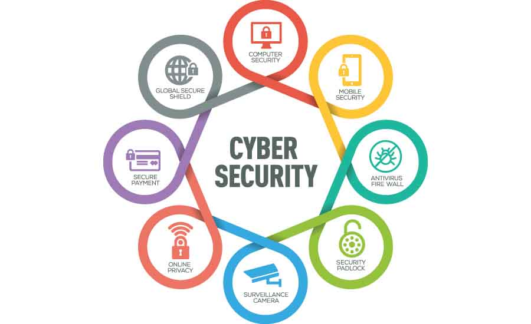
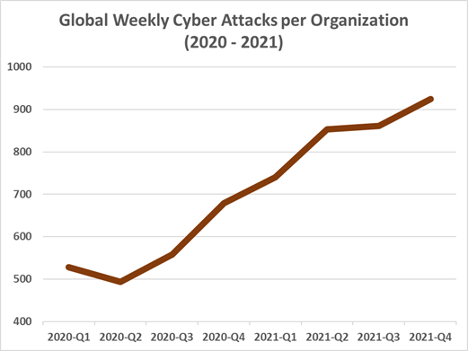

What is it?
Cybersecurity is the practice of protecting computer systems and networks from digital attacks, theft, damage, and unauthorized access. Cybersecurity is an essential aspect of modern life, as our increasing reliance on technology makes us more vulnerable to cyber threats. Cybersecurity incorporates a range of technologies, practices, and policies aimed at protecting data and systems from cyber threats. It encompasses various elements, including computer hardware and software, network infrastructure, communication systems, and data storage systems.
 Cybersecurity is essential for ensuring the integrity, confidentiality, and availability of data and systems. Cybersecurity threats can come from a variety of sources, including hackers, malware, viruses, and phishing attacks. Hackers can steal sensitive data, such as personal information, financial data, and trade secrets. Malware can corrupt data, disable systems, or steal sensitive information. Viruses can infect systems and spread throughout networks, causing damage and destruction. Phishing attacks are social engineering attacks that trick people into providing sensitive information or installing malware.
Cybersecurity includes a range of technologies and practices aimed at protecting systems and data from these threats. Some of the primary technologies used in cybersecurity include firewalls, intrusion detection and prevention systems, antivirus and anti-malware software, and encryption. These technologies work together to prevent unauthorized access, detect and prevent intrusions, and protect data from theft and corruption.
Another critical element of cybersecurity is policy and practice. This includes creating policies and procedures for data handling, network access, and incident response. Policies and procedures ensure that employees and contractors follow best practices for cybersecurity and minimize the risk of human error. Organizations should also conduct regular cybersecurity audits and vulnerability assessments to identify weaknesses and potential threats to their systems and data.
Why is it imporant?
 In today's digital world, cybersecurity is more important than ever. Cyber threats are constantly evolving and becoming more sophisticated, and the costs of cybercrime are increasing. In fact, cybercrime is estimated to cost the global economy $6 trillion annually by 2021. This staggering figure includes the cost of lost revenue, the cost of dealing with attacks, and the cost of damage to brand reputation. Additionally, the average cost of a data breach in 2020 was $3.86 million. These costs can be devastating to businesses of all sizes, and it's not just large corporations that are at risk. Small and medium-sized businesses are often targeted by cybercriminals because they are perceived as easier targets.
Not only do cyber attacks have financial consequences, but they can also have serious security implications. For example, a successful attack on critical infrastructure, such as power grids or transportation systems, could result in physical harm to individuals and widespread disruption. According to a report by the Center for Strategic and International Studies, cyber attacks on critical infrastructure in the US could result in economic losses of up to $1 trillion. Furthermore, cyber attacks can also compromise personal data, such as credit card numbers and social security numbers, leading to identity theft and other forms of fraud. In 2020 alone, there were 1.4 million reports of identity theft in the US. Clearly, the consequences of cyber attacks are far-reaching and can have serious implications for individuals and society as a whole.
With the increasing amount of personal data being stored online, individuals are at risk of having their sensitive information stolen in a cyber attack. In 2020, the US Federal Trade Commission reported that identity theft was the most common type of consumer complaint, with over 1.4 million reports. Cyber attacks can result in stolen credit card information, social security numbers, and other sensitive data that can be used for fraudulent activities. Implementing strong cybersecurity measures can help prevent these types of attacks and protect individuals' personal information from falling into the wrong hands.